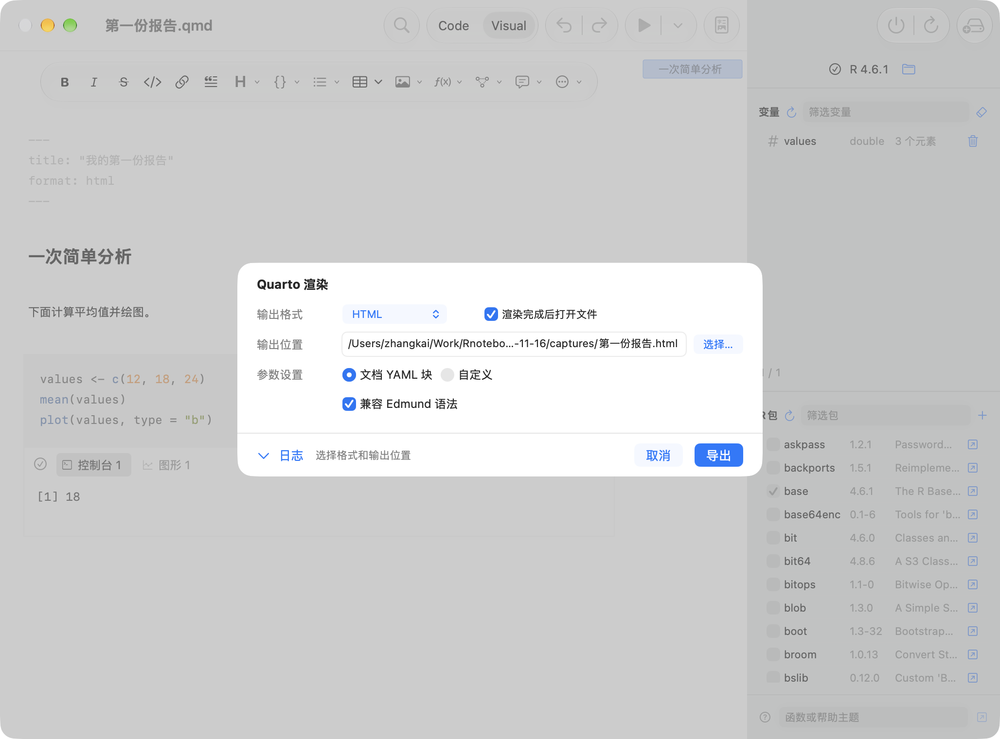

Quarto 与 QMD 基础
Quarto 将 Markdown 文字、代码和文稿选项组合成报告。.qmd 是 Quarto 文稿；普通 .md 主要表达文字结构。Rnotebook 管理 QMD/RMD，Markdown 写法是这些笔记的基础。
一份 QMD 的结构
---
title: "测量报告"
author: "作者"
format:
html:
toc: true
execute:
echo: true
warning: true
---
# 数据与方法
说明数据来源和计算方法。
```{r}
#| label: summary
values <- c(12, 18, 24)
mean(values)
```
# 结论
结合结果写出结论。
开头两条 --- 包住 YAML；正文采用 Markdown；{r} 围栏是可执行 R 块。YAML 使用空格缩进，不用 Tab，同级键保持对齐。标题含冒号等标点时，用引号包住完整文字。#| 代码块选项也是 YAML 写法。
常用文稿选项
| 选项 | 用途与示例 |
|---|---|
| title / author | 报告标题和作者，如 title: "测量报告" |
| lang | 文稿语言，如 zh-CN 或 en-US；自定义导出留空表示不额外指定 |
| format | html、docx、pdf 或 typst；可按格式嵌套参数 |
| toc | 是否生成目录，常放在相应 format 下 |
| number-sections | 是否给章节编号 |
| execute | 全文执行选项；代码块的局部设置可覆盖对应项目 |
| bibliography | 参考文献文件，例如 references.bib |
常用代码块选项
```{r}
#| label: fig-values
#| fig-cap: "三次测量"
#| echo: false
#| fig-width: 6
#| fig-height: 4
plot(c(12, 18, 24), type = "b")
```
| 选项 | Quarto 渲染中的含义 |
|---|---|
| eval: false | 不执行该块 |
| echo: false | 执行，但不在报告显示源代码 |
| output: false | 不在报告显示代码块结果 |
| include: false | 执行，但不在报告显示代码和结果 |
| warning: false / message: false | 分别隐藏警告/消息的显示 |
| error: true | 在报告保留普通错误并继续处理 |
| label | 给块命名；图用 fig- 前缀，表用 tbl- 前缀 |
| fig-cap / tbl-cap | 图/表标题 |
| fig-width / fig-height | 图形尺寸（英寸） |
这些是报告选项。Rnotebook 的交互批量执行只读取支持的静态执行控制，例如 eval、error；手动单块可明确运行被禁用的块。echo: false 不会使编辑器中的源码消失。详细规则见R 运行与报告导出。
图表、引用与行内计算
图块命名为 fig-values 后，正文可写 见 @fig-values。表格可用 knitr::kable() 生成并设置 label: tbl-summary 与 tbl-cap，再通过 @tbl-summary 引用。
参见 @fig-values。
文献引用写作 [@smith2024]，并在 YAML 指定 bibliography。
行内计算：均值为 `r mean(values)`。
交叉引用、文献引用和行内 R 表达式由 Quarto 渲染处理；交互块运行不会把这些文字替换成最终报告内容。引用键需在所用文献文件中存在。
QMD 和 RMD 块头
QMD 常把块参数写在顶部 #| 行。RMD 常写 {r setup, include=FALSE}，逻辑值使用 R 的 TRUE/FALSE。Rnotebook 识别常见命名/参数 R 块；更改扩展名并不会自动转换全部文稿配置，尤其要核对 R Markdown 的 output: 与 Quarto 的 format:。
选择输出与参数来源

- HTML：适合浏览器阅读；应用导出使用单文件资源嵌入。
- Word：生成
.docx，适合继续审阅与文字编辑。 - LaTeX PDF：通过 TeX 排版，需准备本机环境与字体。
- Typst PDF：通过 Typst 排版，检查所用字体和格式选项。
选择 YAML 时使用文稿的配置。选择 自定义 时，面板里的参数用于本次导出，原文稿不改写；切换后草稿保留，隐藏的自定义值不进入 YAML 模式。渲染使用独立进程，文稿应包含创建所有所需对象的代码。
导出失败的排查顺序
先看日志里的首个实际错误：找不到对象时检查块顺序和 eval；缺包时给选定 R 安装依赖；找不到图片/CSV 时检查相对路径；YAML 解析失败时检查缩进和引号；PDF 引擎/字体/宏包错误则检查对应排版环境。先用同一份文稿导出 HTML，可帮助区分计算问题与 PDF 排版问题。